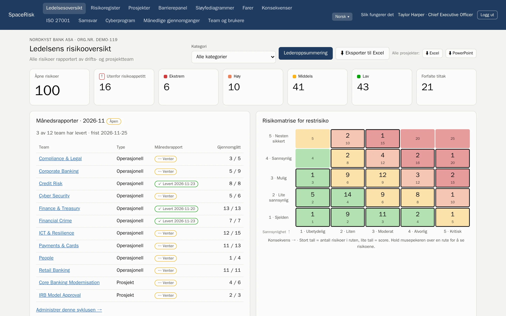
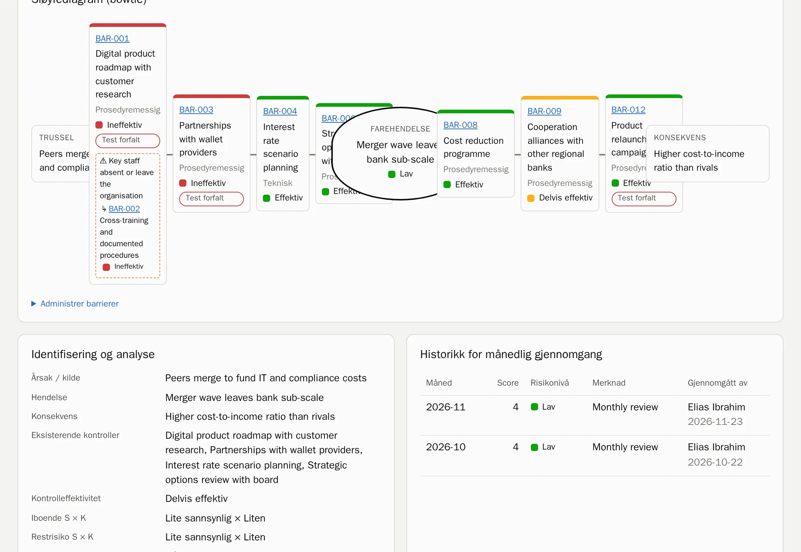
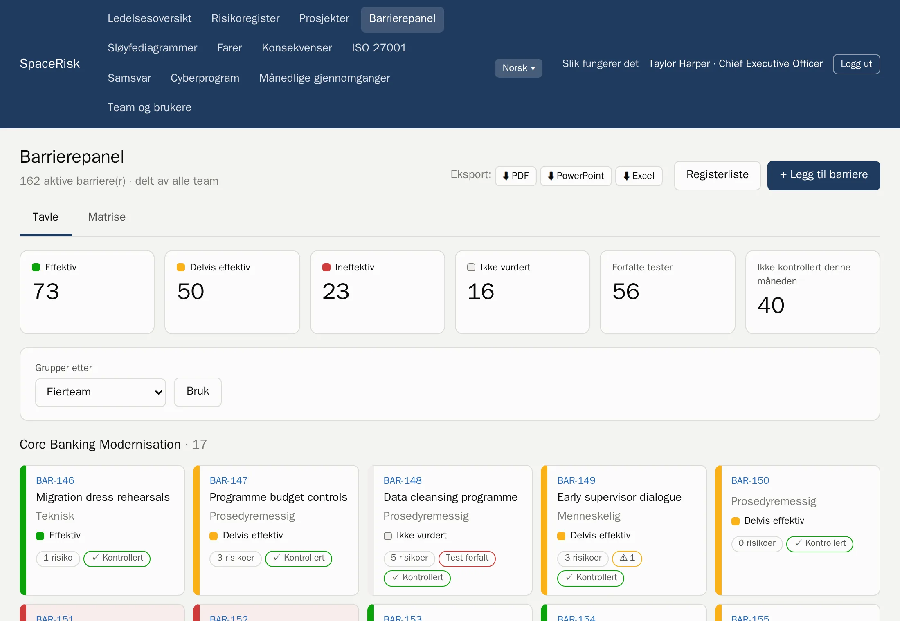
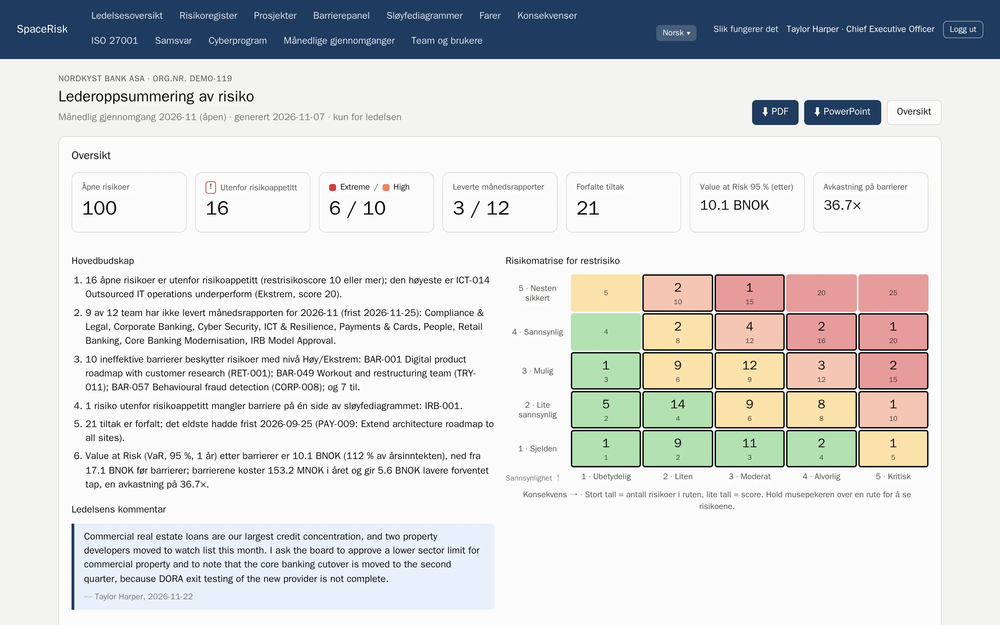
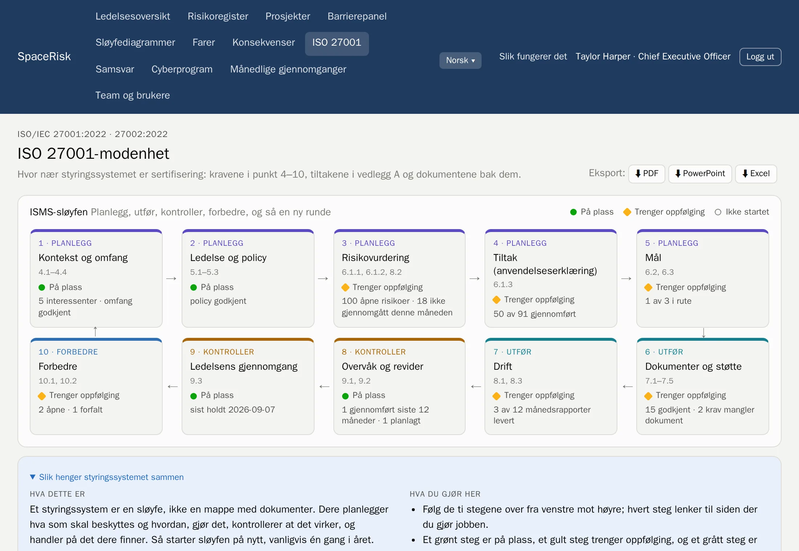
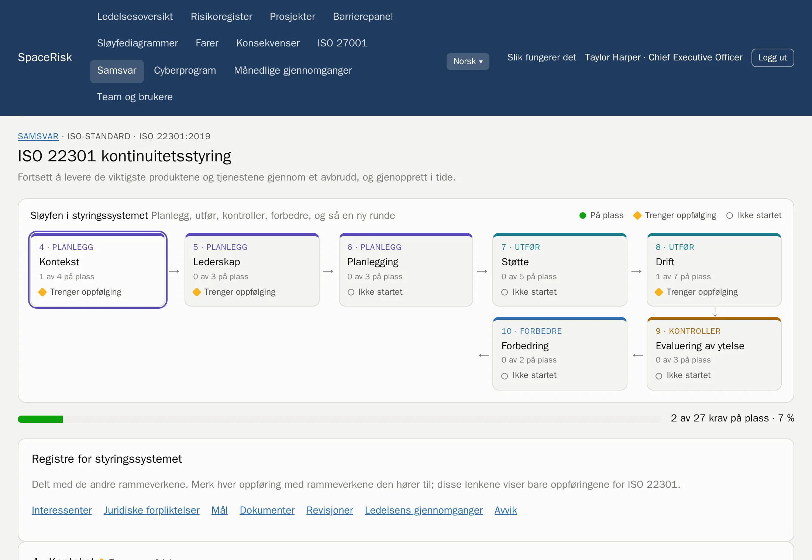
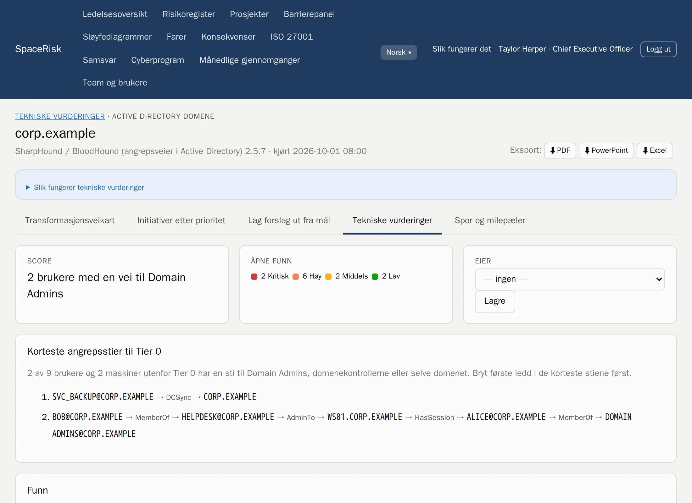
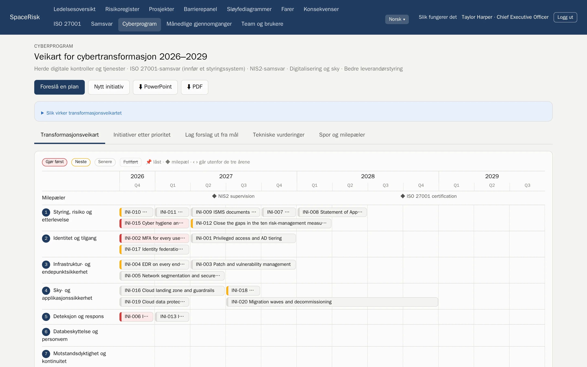

Risikostyring etter ISO 31000
Hver risiko, fra teamet til styrerommet.
SpaceRisk gjør risikoene teamene kjenner til, om til levende sløyfediagrammer, kontrollerer barrierene som stopper dem hver måned, og viser ledelsen hva det kan koste.
Driftet av oss eller på egne servere. Dataene er alltid deres.

- Bank
- Forsikring
- Sykehus
- Olje og gass
- Kraft
- Programvare
- Offentlig sektor
- Logistikk
- Bygg og anlegg
- Varehandel
Slik virker det
ISO 31000-sløyfen, bygget inn i måneden.
Ikke et eget risikoprosjekt som går ut på dato. SpaceRisk gjør standarden til en enkel månedlig rytme som alle team kan følge.
- 1
Sett kriteriene
Én skala for sannsynlighet og konsekvens, risikoappetitten og kategoriene deres.
- 2
Identifiser
Team og prosjekter registrerer hva som kan gå galt, der de jobber.
- 3
Analyser og evaluer
Iboende risiko, restrisiko og målrisiko, målt mot risikoappetitten.
- 4
Håndter
Barrierer og tiltak med eiere og frister.
- 5
Overvåk og gjennomgå
Hver måned gjennomgår hvert team risikoene sine, kontrollerer barrierene og leverer månedsrapporten.
Sløyfediagrammer og barrierer
Se hva som står mellom en trussel og skaden.
Hver risiko er et sløyfediagram (bowtie): truslene til venstre, konsekvensene til høyre og barrierene imellom. Barrierene ligger i ett felles register, så ett tiltak kan beskytte mange risikoer, og dere ser med en gang når en svak barriere bærer for mye.
- Forebyggende og konsekvensreduserende barrierer, med effektivitet og dato for siste test
- Et barrierepanel for hele virksomheten, gruppert etter eierteam eller type
- Eskaleringsfaktorer, og barrierene som beskytter barrierene


Månedlige gjennomganger
Én rytme for alle team.
Hver måned gjennomgår teamet alle risikoene det eier og kontrollerer hver barriere, og så leverer teamlederen månedsrapporten. Dere vet alltid hvem som er à jour, og trenden for hver risiko bygger seg selv.
- Oversikter per team og prosjekt, med risikomatrise og trenden for hver risiko
- Månedsrapporten kan bare leveres når alle risikoene er gjennomgått
- En kommentar for hver måned, og hele historikken for revisor
For ledelsen
Risiko på styrets språk.
SpaceRisk setter en pris på eksponeringen: forventet tap, en simulert Value at Risk før og etter barrierene, og avkastningen på det barrierene koster. Lederoppsummeringen skriver sine egne hovedbudskap og er klar til å presenteres.
- VaR 95 %
- simulert, før og etter barrierene
- 1 klikk
- lederoppsummering som PDF eller PowerPoint
- Excel
- alle registre, klare til analyse

Samsvar
Ett styringssystem, mange standarder.
Slå på rammeverkene dere trenger. Hvert av dem viser sin Planlegg–Utfør–Kontroller–Korriger-sløyfe med framdrift og neste steg, og de deler de samme registrene: interessenter, juridiske forpliktelser, mål, dokumenter, revisjoner, ledelsens gjennomganger og avvik.
- Tilgjengelig
ISO/IEC 27001 og 27002
Punkt 4–10, alle 93 kontroller, en erklæring om anvendelse, ISMS-sløyfen og eksport klar for revisjon.
- Tilgjengelig
ISO 22301
Kontinuitetsstyring: sløyfen for styringssystemet og hvert krav, med eiere og dokumentasjon.
- Tilgjengelig
ISO 45001
Arbeidsmiljø og sikkerhet, med medvirkning fra arbeidstakerne og lovkrav.
- Kommer
NIS2 og DORA
Frister for hendelsesrapportering, leverandørregistre og testing av motstandsdyktighet.
- Kommer
GDPR og ISO 27701
Protokoll over behandlingsaktiviteter, DPIA og henvendelser fra de registrerte.
- Kommer
ISO 42001 og CRA
Styringssystem for KI og produktsikkerhet etter Cyber Resilience Act.


Veiledning, ikke juridisk rådgivning. Kravtekstene er skrevet med våre egne ord.
Cyberprogram
Fra sikkerhetsfunn til en treårsplan.
Last opp resultater fra verktøyene teamet allerede bruker. SpaceRisk gjør funnene om til dokumentasjon på de riktige ISO-kontrollene, finner de korteste angrepsveiene til domeneadministratorene og foreslår et prioritert program på et transformasjonskart dere kan ta rett til styret.
- PingCastle
- Prowler
- SharpHound
- Funn, trender og utbedringer per mål, på tvers av alle kjøringer
- Angrepsveier til Tier 0 fra Active Directory-data
- Et poengsatt transformasjonskart, eksportert til PowerPoint og PDF


Agenter og API
La agentene ta papirarbeidet. Folk bestemmer fortsatt.
Skript og KI-agenter får egne tokens og et dokumentert REST-API. De melder og gjennomgår risikoer, kontrollerer barrierer og laster opp verktøyresultater. I forslagsmodus venter hver endring i en innboks til en person godkjenner den.
- OpenAPI-dokumentasjon
- Hvert forslag sjekkes før noen godkjenner det
- Agent-tokens lagres som hash
POST /api/v1/risks/ICT-014/review
Authorization: Bearer ••••••••
← 202 venter på godkjenning i innboksen
POST /api/v1/assessments/uploads?tool=pingcastle
Content-Type: application/xml
← 201 resultater lagretDemodata
92 virksomheter å utforske, fra banker til sykehus.
Start i en verden dere kjenner igjen. Hvert eksempel er en fiktiv virksomhet med egne team, risikoer, barrierer og historikk, klar på minutter. Hvert eksempel har en lederoppsummering som PDF.
Bygget for å være til å stole på.
Driftet av oss eller selv
Vi drifter det for dere, eller dere kjører det på egne servere, på Intel eller ARM.
Dataene er deres
Eksporter alt som PDF, PowerPoint, Excel eller en komplett sikkerhetskopi av databasen, når som helst.
Tilgang etter rolle
Ledelsen ser alt. Team ser sitt eget. Pengene er forbeholdt ledelsen.
Sju språk
Engelsk, norsk, tysk, spansk, fransk, italiensk og portugisisk, for hver bruker.
Se SpaceRisk med deres egne risikoer.
Fortell oss om virksomheten, så setter vi opp et eksempel som ligner deres.